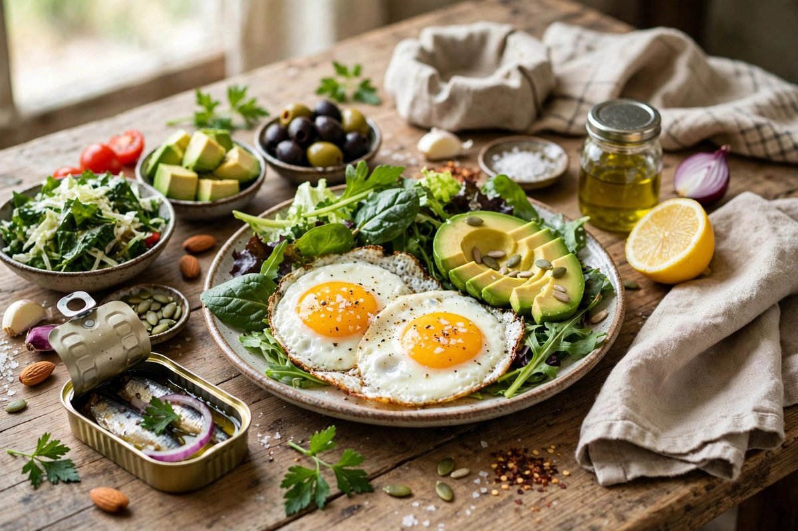

Home » Guides
Keto on a Budget

Keto has a reputation for being expensive, but it does not have to be. Avocados and almond flour are pricey, but eggs, cabbage, mince, and tinned fish are among the cheapest foods in the shop. This guide shows you how to eat well on keto without spending a fortune, with practical tips for shopping, cooking, and planning.
Cheap keto proteins
Eggs are the cheapest keto protein by far, and they are versatile enough to eat every day. Tinned tuna, sardines, and mackerel cost very little and need no cooking. Beef mince, chicken thighs, and pork are cheaper than steak and chicken breast, and fattier cuts suit keto better anyway. Whole chickens are cheaper per kilo than portions, and the leftovers make several meals. Organ meats like liver are extremely cheap and very nutritious. Buy meat on special offer and freeze it, and check the reduced section for same-day bargains.
Cheap vegetables and fats
Cabbage, cauliflower, courgette, and leafy greens are among the cheapest vegetables, and they are all keto-friendly. Frozen vegetables are even cheaper, last for months, and are just as nutritious as fresh. Buy seasonal vegetables, which are always better value. For fats, butter and olive oil are affordable staples, and you do not need expensive oils. Avocados are a treat, not a necessity — if they are expensive where you live, use olive oil, nuts, and cheese for your healthy fats instead. A little planning means you rarely need the priciest keto foods.
Planning and batch cooking
Meal planning is the single best way to save money on keto. Plan a week of meals, write a list, and shop once, so you buy only what you need. Cook in bulk: a large pot of beef chilli, a tray of roasted chicken thighs, or a slow-cooked pork shoulder can feed you for days. Use leftovers for lunch the next day, and freeze anything you will not eat within four days. Avoid keto-branded products — snack bars, special breads, and ready meals — which cost several times more than the whole foods they replace.
A sample budget week
A budget keto week might look like this: eggs and spinach for breakfast, tuna salad or egg salad for lunch, and mince with cabbage, chicken thighs with cauliflower, or a vegetable omelette for dinner. Snacks are a boiled egg, a handful of peanuts, or a slice of cheese. Shopping for this week costs far less than a week of takeaways, and the meals are simple enough to cook in twenty minutes. Keto on a budget is not about deprivation — it is about choosing the affordable foods that are already keto-friendly.
Saving money without eating badly
The best budget tip is to cook from scratch, because processed keto products cost several times more than the whole foods they replace. A bag of almonds is cheaper per serving than a box of keto bars, and a tray of roasted chicken thighs is cheaper than a ready meal. Buy in season, buy in bulk, and freeze what you cannot use. Use cheaper cuts of meat and slow-cook them until tender. Grow a few herbs on a windowsill, so you never pay for a packet of basil you will half waste. Finally, waste less: plan meals, use leftovers, and turn vegetable scraps into stock. These habits save more money than any coupon, and they make your food taste better too.
Frequently Asked Questions
Is keto more expensive than a normal diet?
It can be if you buy premium products, but a simple keto diet based on eggs, mince, cabbage, and tinned fish is often cheaper than a diet full of takeaways and processed food.
What is the cheapest keto meal?
Eggs with spinach and butter, or tuna salad with cabbage. Both cost very little, take minutes to make, and are filling and nutritious.
Do I need expensive supplements on keto?
No. Most people need only food, water, and salt. A magnesium supplement is sometimes useful, but it is inexpensive and optional.